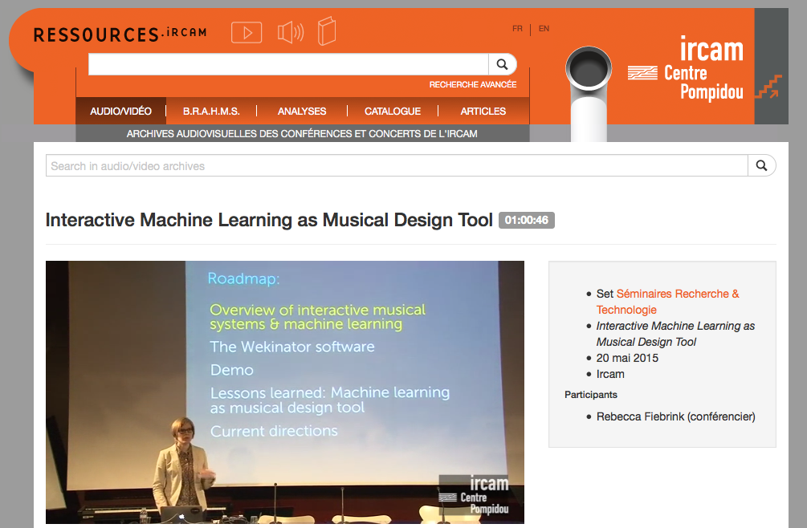
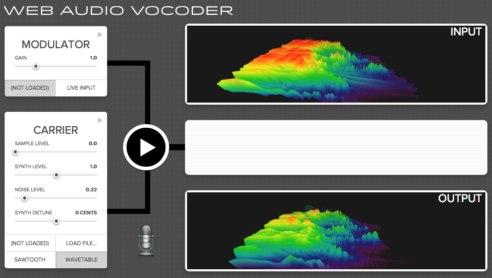
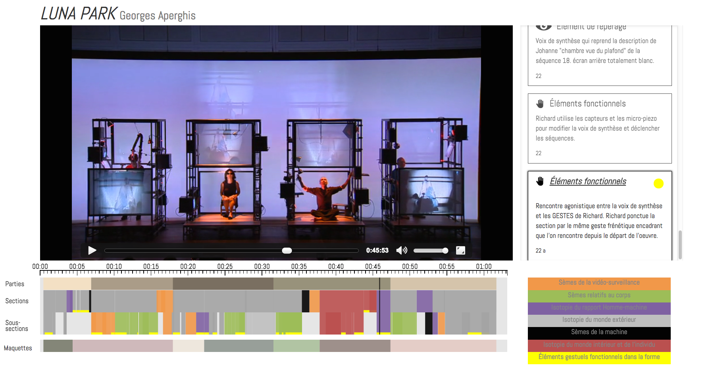

class: center, middle # Web Audio Ircam Forum Workshops Paris - France, Nov 24, 2015 Norbert Schnell ([@norbertschnell](https://twitter.com/norbertschnell)) & Samuel Goldszmidt ([@ouhouhsami](https://twitter.com/ouhouhsami)), Ircam --- layout: true # Ircam → Web Audio --- **Audio** and music is the main topic of Ircam research program <br> **Web** used for dissemination (databases of composers ...) <img src='./media/img/iMubu.png' height=200px/>  2 french funded research projects using Web Audio **technologies** and **standards**: * [WAVE](http://wave.ircam.fr) (Web Audio Visualization/Edition) 2012/2015 * [CoSiMa](http://cosima.ircam.fr) (Collaborative Situated Media, N. Schnell) 2013/2016 * 1<sup>st</sup> Web Audio Conference [WAC](http://wac.ircam.fr/program.html) January 2015 with Mozilla and the W3C * Next edition [Georgia Tech, Atlanta](http://webaudio.gatech.edu/) April 2016. ??? Audio et Musique, au cœur des problématiques Ircam : 7 équipes de recherche : Acoustique instrumentale, Espaces acoustiques et cognitifs, Perception et design sonores, Analyse & synthèse des sons, Représentations musicales, Analyse des pratiques musicales, Interaction son musique mouvement Web : dissémination des savoir scientifiques, des base de données de compositeurs, d'œuvres, et, des outils pour la musicologie numérique. Développement d'outils d'écoute actives (projet Ecoutes signées) Comment les compositeurs, interprètes ... écoutent. Et avec Norbert Schnell, chercheur à l'IRCAM dans l'équipe ISMM on a décidé de réunir les deux. Au moment ou le "Web Audio" émergent véritablement pour des applications exigentes Et est accessible sur (quasi) tous les périphériques connectés de dernière génération #### Pourquoi transférer des savoirs, des technologies, des algorithmes d'informatique musicale de l'Ircam vers la plateforme Web ? * 3 000 000 000 d'utilisateurs - s'adresser au plus grand nombre * *Browser As An OS*, pas d'installation - "TTM" minimal * Plateforme partagée, multi-utilisateurs, temps réel et multimédia * Nouveaux champs d'expérimentation et de recherche et retours utilisateurs ex. Word → Google Doc --- layout: true # Web Audio Technologies, Standards, Facts --- ## Short Story ~ 1995: <bgsound> <embed> <applet> "equivalent of <blink> for the sound" <br> ~ 1997: Flash - player and Flash Media Server <br> ~ 2008: HTML5 <audio> <br> ~ Since 2010: Web Audio API **and linked to the Web Audio field** : WebSocket API, WebRTC (getUserMedia), HTTP streaming (DASH), Web Midi API, MediaStream Recording, Audio output devices API, Geolocation API, Device Orientation et Device Motion API, Presentation API ... ??? * 1995: <blink> midifile et protocoles propriétaires (RTP, RTSP) * 1997: côté client avec le plugin et côté serveur avec FMS et octobre 2008 Sound API dans Flash pour faire du traitement audio, minimal * 2008: HTML5 <audio> * 2010: HTTP streaming (DASH), WebRTC et WebSockets pour l'échange de données, Wep Audio API (première implémentation Chrome 2011). Web Audio API disponible sur Edge Web Audio !== Web Audio API 20 ans après la première possibilité de lire un son dans le navigateur, les standards proposent un ensemble de fonctionnalités primitives pour créer des applications audio temps réel ou non sur le web. Même s'il y a encore des choses qui manquent et à améliorer. --- ## Exemples [](https://webaudiodemos.appspot.com/Vocoder/index.html) [<img src="./media/img/synth.png" height="220px" />](http://webaudiodemos.appspot.com/midi-synth/index.html) * Vocoder: getUserMedia + Web Audio API * Synthesizer: Web Midi API + Web Audio API Interactive explanations : [Recreating the sounds of the BBC Radiophonic](http://webaudio.prototyping.bbc.co.uk/) ??? Comment on fait fonctionner conjointement des standards. --- layout: true # Ircam Web Audio librairies, framework, apps --- ### waves.js > An open source library to ease the development of Web Audio applications (WAVE project) > Fill the gap between the web standards and common use cases of music applications * [UI](http://wavesjs.github.io/ui/): A library to display and edit audio data and timeseries data in the browser. * [Audio](http://wavesjs.github.io/audio/): Audio engines and scheduler ??? Aborde les questions que la Web Audio API et d'autres standards ne résolvent pas (il ne s'agit pas d'un wrapper d'API). --- <img src="./media/img/leroux.mvt4.png" width=80%/> ["Blocs Gigognes", 4th part analysis of *Voi(rex)* by P. Leroux](http://wave.ircam.fr/demo/leroux-blocs-gigognes/) --- <img src="./media/img/webern.opus27.png" width=90%/> [Analysis of Anton Webern *Opus 27* by E. Ducreux](http://wave.ircam.fr/demo/webern-opus-27/) ---  [Analysis of Georges Aperghis *Luna Park* by J.-F Trubert](http://wave.ircam.fr/demo/aperghis-luna-park/) --- <img src="./media/img/bachotheque.png" width=90%/> ["Bachothèque" J.-S Bach](http://wave.ircam.fr/demo/bachotheque/) --- <img src="./media/img/1901-phoenix.png" width=90%/> [Beat, Chords and Structure of 1901 - Phoenix](http://wave.ircam.fr/demo/phoenix-1901/)